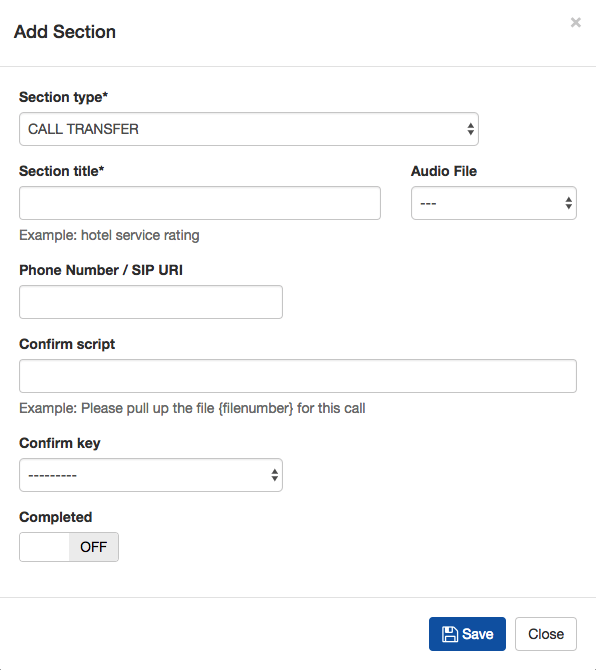
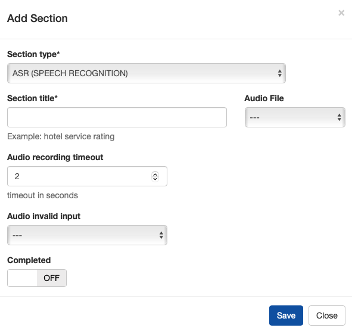
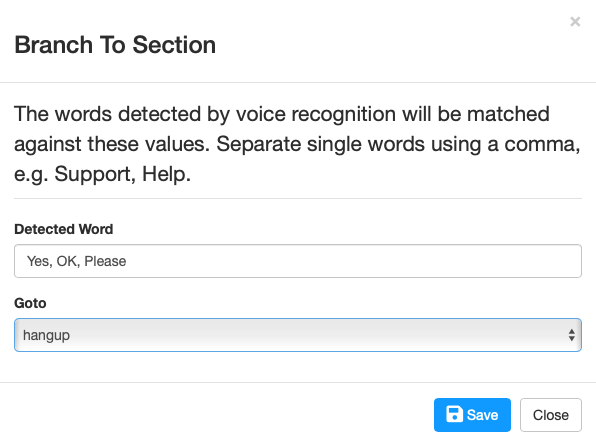

Survey & IVR Configuration¶
- Create Survey
- Survey Nodes
- Survey Completion Retry
- DTMF input with Audio
- TTS or Audio file
- Tag Substitution with TTS
- Capture Digits
- Conference
- DNC
- Hangup
- Multi-Choice
- Play Message
- Rating Question
- Record Message
- SMS Message
- Call Transfer
- HTTP API
- HTTP API Async (Non Blocking)
- ASR (Speech Recognition)
- Survey Branching
- Uploading Audio Files
Create Survey¶
We recommend that you create and prototype the survey using Text to Speech, particularly with more complex surveys, once you are happy with the end result, then you can use the TTS as a script for your voice talent.
There are more details on uploading audio files further on in this section.

The survey application for Newfies-Dialer allows polls and surveys to be taken over the phone.
Each contact is called, and then played a sound file or Text to Speech (TTS). After the sound file is heard, the user can enter their answer through the phone keypad using keys 0 to 9.
Survey Nodes¶
There are many types of survey nodes which allow to create complex IVR applications. On each node you will be able to perform call transfer, capture digits, go to conference room, add a contact to the DNC list and much more.
Most survey nodes have similar attributes that include:
- Section Title, the title of the section and becomes the TTS (text To Speech)
- Audio File, The sound file to be played for this node.
- Retries, if no valid input, then the question can be asked again.
- Timeout, the amount of time before it is considered that no input has been received.
- Check Validity, whether the answer is deemed valid.
- Audio Invalid Input, The audio to play when invalid input is received.
- Survey Complete, check this field to mark the survey is complete for reporting & retry purposes.
Survey Completion Retry¶
As mentioned in the list above, When a node is created, the “Survey Complete” checkbox can be turned on so that it is clear that the contact reached a certain point in the survey and did not abandon the call early.
Usually, one of the last nodes in the survey is marked as “Survey Complete”.
If the contact does not get as far as a “Survey Complete” node, then Newfies-Dialer can call them back to have another go at the survey.
The Completion Retry interval and number of times to retry is set in the campaign under the “Dialer Completion Settings” section.
DTMF input with Audio¶
Any node where you expect to recieve DTMF must have either TTS or an audio file, even if that audio file is only half a second of silence.
TTS or Audio file¶
When no audio file is selected against a node, the TTS will be used. The TTS is automatically created from the title or question that is assigned to the node, but it can be edited afterwards.
Tag Substitution with TTS¶
- This is the list of standard tags that will be automatically replaced:
- {full_name} {contact} // This is the phone number
If you need more flexibility, you can use the “Additional Parameters (JSON)” field which allow you to add custom key-values that will be replaced.
- For example, let’s add this in “Additional Parameters (JSON)”:
- {“company_name”: “Canonical”, “bonus” : “200”, “currency” : “euro”}
When you create a survey with a node that plays TTS, you can easily replace the key-values in the text. Text example:
“We are calling you on behalf of {company_name}, you will receive a bonus of {bonus} {currency}”
This will play:
“We are calling you on behalf of Canonical, you will recieve a bonus of two hundred euro”
Capture Digits¶
Captures a series of digits, e.g. a telephone number or account number and stores it in the reporting. The number of digits and the minimum and maximum values can be set.

Conference¶
Set up a conference with outbound calls. The default conference number in Freeswitch is 9888. The Freeswitch dialplan can be adjusted to add more conferences.

DNC¶
Do Not Call node, which will add the called contact to the DNC list configured in the campaign.

Hangup¶
Hang up the call at the end of the survey. It’s good practice to always end a survey with an explicit hangup.

Multi-Choice¶
Multi-Choice offering options 0 to 9. The value placed in the “Key X” fields appears in the survey reports.
Survey branching can be used to control the flow of the IVR depending on the key pressed.


Rating Question¶
Rating allows the entry of a digit or digits from 1 to X, where X is a number you select.

Record Message¶

Record a message, the system stops recording after 3 seconds of silence, or by pressing the # key. The IVR flow will then continue.
Recordings can be listened to in the survey reports menu.
SMS Message¶
Play a message to the customer, either via TTS or audio file, then send an SMS message to the customer.
Note that when the campaign is created, an SMS gateway must be selected under the Dialer tab.
Reports on SMS messages can be be viewed under the Reporting section.
Call Transfer¶
Used for “press one” campaigns and live lead generation. This node bridges the call to the number in the Phone Number field when the contact answers.
The field can have a telephone number or something like sofia/gateway/my.gateway/12345 which will direct the call via a specified gateway (my.gateway) to number 12345.
Note that if your carrier requires a prefix, it must be added here, as the prefix against the gateway configuration in Newfies-Dialer is not respected.
In order to support screen-pops and deliver other data, there has been some data included in the SIP message
By default the following data is included in the SIP header on call transfer:
P-CallRequest-ID
P-Subscriber-ID
P-User-ID
P-Gateway-ID
P-Last-Digits
P-CallerID-Name
P-CallerID-Number
P-Destination-Number
P-Dialer-UUID
P-Survey-ID
P-Record-Filename
P-contact-id
P-campaign-id
P-gmt-offset
P-status
P-tz-code
P-created-date
P-updated-date
It is envisaged that these ID numbers can be used to do database look-ups on the Newfies-Dialer database.
Furthermore, there is a optional SIP header that can be added.
P-Contact-Transfer-Ref:
This can be added against the Contact in the “Additional Parmeters (JSON)” field. Simply add the “transfer_ref” keyword and string to send in the SIP message as follows:
{"transfer_ref": "My-Unique-Ref-Number"}
In the SIP headers, you will see:
P-CallRequest-ID: 3
P-Contact-ID: 1
P-Contact-Transfer-Ref: My-Unique-Ref-Number
...
In the latest version, since 5.9, any contact additional parameters will also be sent in the SIP headers.
Confirm Script is TTS which can be played to the agent before the contact is connected, if this facility is used, then a number between 0 and 9 should be entered into the confirm key field which the agent presses to answer the call. Both these fields are optional.
HTTP API¶
This node provides the ability to perform HTTP API Request and branch to another node based on the result.
In order to do this, the UI has some features in the survey editor:
- API URL: to enter the url for the HTTP query
- Branching based on matching results: this allows selection the next branch based on the API result
The API MUST implement the GET method on the given URL and return a valid JSON document with the field “api_result”, eg:
{
"api_result": "5000"
}
The value of “api_result” eg “5000” is used to decide which node to branch to on the IVR.
The branching on API Node supports:
- timeout: maximum time to wait on an API request.
- pattern: check api_result against a pattern and therefore which node to branch to
- any: if no pattern can be matched, this will branch to the selected node (enter “any” in pattern)
The API call will pass a list of HTTP variables to identify the call session and the contact.
This is the current list of variables passed:
- campaign_id
- subscriber_id
- contact_id
- callrequest_id
- last_digits
- contact_full_name
- caller_id_name
- caller_id_number
- destination_number
- uuid
- survey_id
- current_node_id
- record_filename
Use case: HTTP API could be used in many scenarios, such as validating that a call is authorized, or asking to your customer’s PBX how many agents are available.

Note: You can use http://mockbin.org/ or http://putsreq.com to create a test API.
HTTP API Async (Non Blocking)¶
The HTTP API Async is similar the HTTP API, but does not accept or wait for a response. It might be used where you need to send information to a 3rd party system, but don’t need to react on the answer.

ASR (Speech Recognition)¶
This section will be available if speech recognition is enabled on your system.
The Audio Recording Timeout is the minimum amount of time to listen. Transcription takes place after the contact finishes speaking.
Don’t use ASR as the first section in a survey, as it will pickup the contact’s initial greeting rather than the answer to the question.
To branch to another section, enter single words likely to be in the contact’s answer separated by a comma and direct the contact to the next section.
In some cases, we want to simulate a conversation with the contact, but don’t want to act on the answer, so there is no need to transcribe the contact’s answer.
In this case, use a Play Audio section, and in the script, enter detect_silence:6000, but don’t add any audio to play.

This will listen to the answer, wait until the contact has finished speaking, then move on to the next section. If the contact does not speak, or speaks continuously, it will move onto the next section after the number of milliseconds after the colon, e.g. 6000 (6 seconds)
Values of less than 2000ms will be set to 2000ms.
Survey Branching¶
The flow of the survey is determined by Survey Branching, which will pass the contact onto the next node depending on the parameters you set for instance, invalid entry, any key or a specified key.
For simple nodes, such as play audio, there is a dropdown to select the next node to execute, but for more complex nodes, such as Multi-choice, you have to click the branching icon and select the next node to execute depending on the key pressed.
Always ensure that if the contact does nothing, the survey will exit and hang-up automatically, so as to avoid the survey getting stuck in an interminable loop.
Uploading Audio Files¶
It is recommended that you prototype surveys using Text to Speech before getting your voice talent to record your audio.
Once the audio is recorded it can be uploaded via the interface and assigned to the nodes in the survey.
Select Modules then Audio Files from the top menu then click add.
Enter a name to describe the audio, then click choose file, select the file you require from your computer, then click submit.
Note that only MP3 and WAV are supported and the audio should be mono, not stereo. A quick and easy way to record audio is via the website https://voice-recorder-online.com/, and the audio can be edited as well, for instance to trim silence from the start and finish.
The audio file will then be uploaded and renamed so that it is unique.